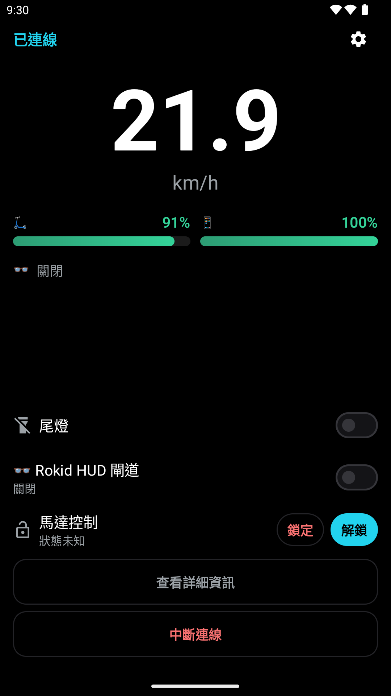
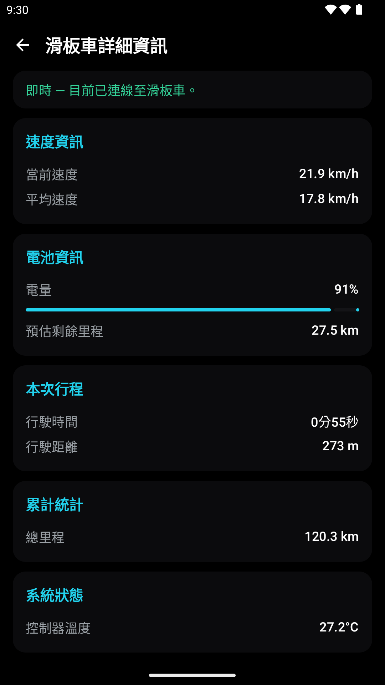
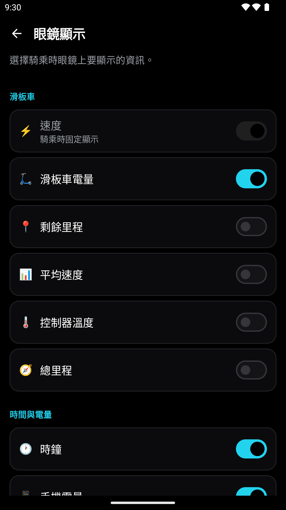
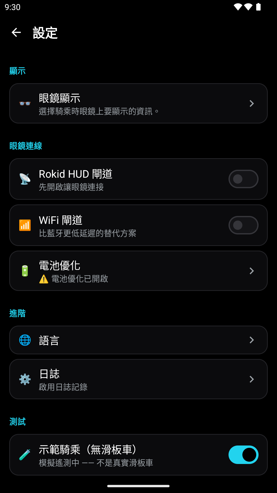

即時儀表板
查看時速、電量、溫度、里程與估算續航。沒有暫存器配置的欄位會隱藏。
ANDROID × ROKID AR
從 Android 手機儀表板，到 Rokid 眼鏡上的 HUD。查看車輛資料、自訂顯示，也能先用 Demo Ride 體驗。

手機即可使用，眼鏡為選用配件。資料欄位與控制功能依車型和協議支援而定。
查看時速、電量、溫度、里程與估算續航。沒有暫存器配置的欄位會隱藏。
透過手機 Gateway 傳送資料至眼鏡端 glass-hud，自選顯示欄位與字級。
查看 RSSI、資料延遲與斷線狀態，了解儀表資料是否仍在更新。
不需滑板車，透過模擬資料體驗儀表板、詳細資訊與 HUD 設定。
匯出 CSV 與除錯日誌。鎖車、尾燈等操作須有對應車型與協議支援。
App 提供 11 種語言；官網可切換繁體中文、英文與簡體中文。
準備 Android 9 以上手機與相容滑板車；也可先使用 Demo Ride。
從 Google Play 安裝手機 App，或至 GitHub Releases 下載 APK。
開啟滑板車，授予藍牙／定位等必要權限，點選 Scan。首次配對依 Register 提示操作電源鍵。
連線後開啟 Dashboard 或 Details。選用 Rokid 眼鏡時，請另安裝眼鏡端 App 並開啟 Gateway。
以下畫面於模擬器使用 Demo Ride 擷取，數字為模擬資料。切換語言可查看對應介面。



辨識、連線、可讀取遙測與實車驗證是四件不同的事。以下為實作摘要，並非相容性保證。
| 車型 | 實作狀態 | 驗證與限制 |
|---|---|---|
| Xiaomi M365 / Pro | 遙測欄位已實作 | 文件支持，未實車驗證；0xB0 回應偏移待確認。 |
| Xiaomi Pro 2 / 1S / Lite | 遙測欄位已實作 | 文件支持，尚無實車封包。 |
| Xiaomi Mi 3 | 可辨識，協議未確認 | 不提供遙測。 |
| Ninebot ESx / G30 / E / F / T15 / G2 / F2 / D | 辨識與協議路徑依家族而異 | 無公開暫存器配置，暫不提供遙測；未實車驗證。 |
| Segway GT / P / ZT3 / Max G3 | 不在目前支援範圍 | 支援狀態未知。 |
手機與眼鏡端是兩個獨立 App。請依相容裝置與版本選用 BLE 或 Wi-Fi 傳輸。
在相容的 Rokid 裝置安裝 glass-hud APK；手機連線滑板車或開啟 Demo Ride，再啟用 Rokid HUD Gateway。啟動眼鏡端 HUD 連線手機，於手機調整顯示欄位與字級。
HUD 顯示 RSSI 與資料新鮮度：超過 2 秒未更新會提示延遲。若有電池最佳化提示，可依引導允許背景運作，降低系統中止連線的機會。
Kotlin 與 Jetpack Compose 負責介面，Rust 負責協議與加密。深入文件保留完整模組、協議與車型研究。
手機透過 JNI 呼叫 ninebot-ffi 與 ninebot-ble。眼鏡端提供 BLE／Wi-Fi 客戶端與連線路由；CXR-M SDK 配置位於手機端。
Xiaomi Mi auth：ECDH、HKDF-SHA256、HMAC-SHA256、AES-128-CCM。Ninebot legacy 加密已實作但未驗證；Encryption2 握手已實作。兩者暫不提供遙測。
協議家族對照需要 JDK 21、Android SDK／NDK、Rust 與 cargo-ndk。Gradle wrapper 9.6.1、AGP 9.0.0、Compose plugin 2.2.10；版本以 Repo 建置設定為準。
git clone https://github.com/zero2005x/M365-Rokid-HUD.git
cd M365-Rokid-HUD
cargo install cargo-ndk
rustup target add aarch64-linux-android armv7-linux-androideabi i686-linux-android x86_64-linux-android
./gradlew assembleDebugWindows 使用 ./gradlew.bat assembleDebug。只做 UI／Demo Ride 可加 -PskipRustBuild，但缺少 native library 時 BLE 加密無法正常運作；release 不允許跳過必要驗證。
下載 App，先用 Demo Ride 熟悉介面。